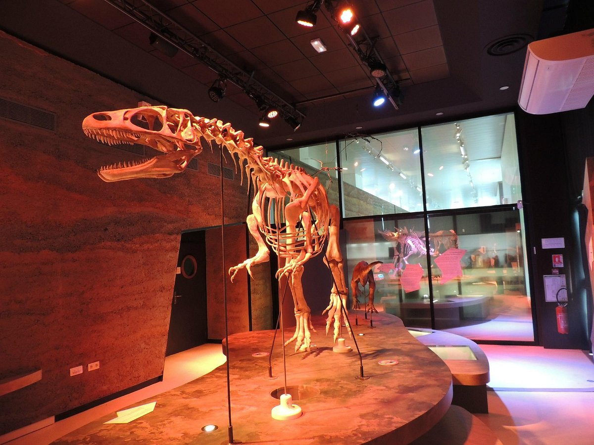
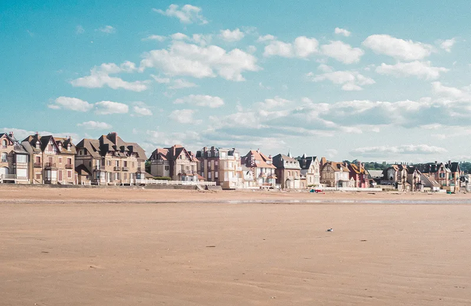
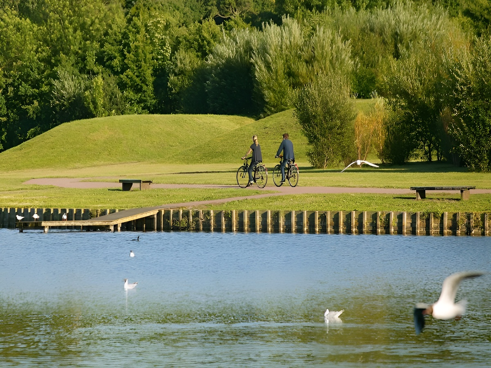
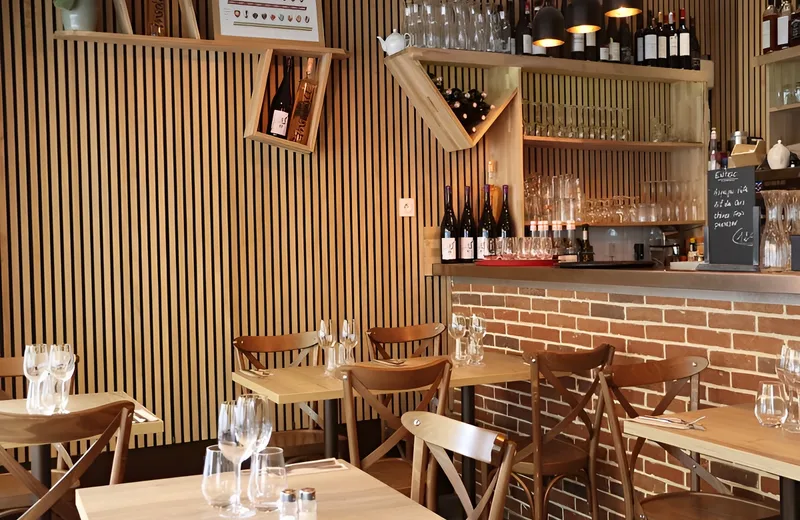
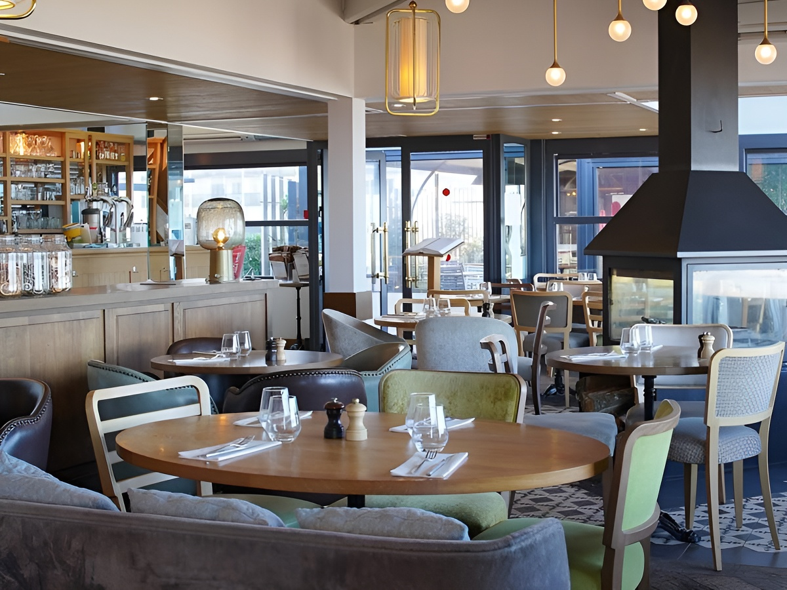
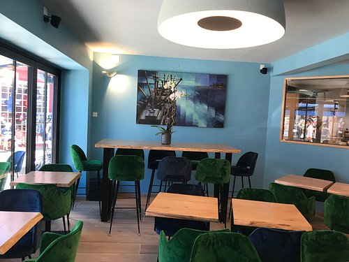
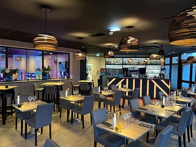
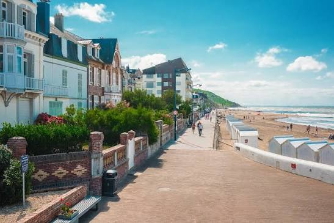
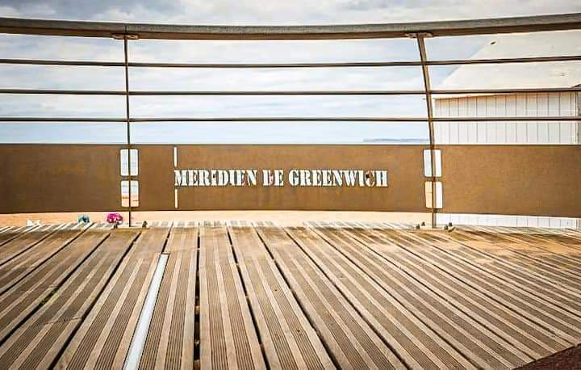
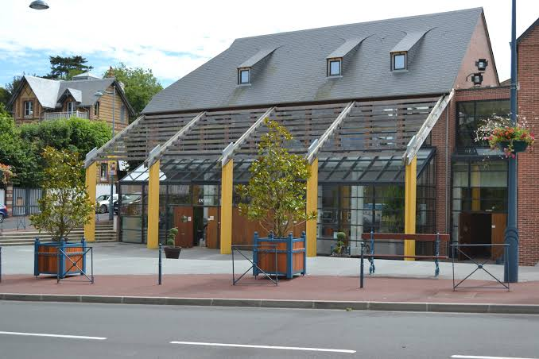

🔬 Découverte
Paléospace
Un musée unique dédié à la paléontologie et à l'histoire du Jurassique en Normandie.
Entre mer, nature et patrimoine jurassique
Présentation
Villers-sur-Mer séduit par son front de mer, ses villas balnéaires et son patrimoine naturel exceptionnel. Entre la plage, les falaises des Vaches Noires et le marais littoral, la station offre un joli équilibre entre promenade, nature et découverte. C’est aussi une destination incontournable pour les passionnés de paléontologie grâce au Paléospace, consacré à l’histoire du Jurassique en Normandie.
À ne pas manquer

Un musée unique dédié à la paléontologie et à l'histoire du Jurassique en Normandie.

Profitez de la grande plage de sable et de son agréable front de mer.

Découvrez un espace naturel préservé entre prairies humides et petits canaux.
Admirez cette belle église néo-gothique, l’un des édifices remarquables de la station.
Saveurs

Une adresse conviviale pour découvrir une cuisine française soignée dans une ambiance de bistrot.
Découvrir l'adresse
Profitez d’une cuisine tournée vers les produits de la mer dans un cadre agréable près du front de mer.
Découvrir l'adresse →
Une bonne adresse pour les amateurs de poissons et de fruits de mer.
Découvrir l'adresse →
Une adresse plus gastronomique, idéale pour une expérience culinaire originale et raffinée.
Découvrir l'adresseCoups de cœur

Flânez le long du front de mer en profitant de la vue sur la Manche.

Faites une halte sur le front de mer pour découvrir le célèbre méridien qui traverse la commune.

Découvrez ce lieu culturel au cœur de Villers-sur-Mer, qui accueille expositions, animations et événements tout au long de l’année.
Explorez Villers sur Mer